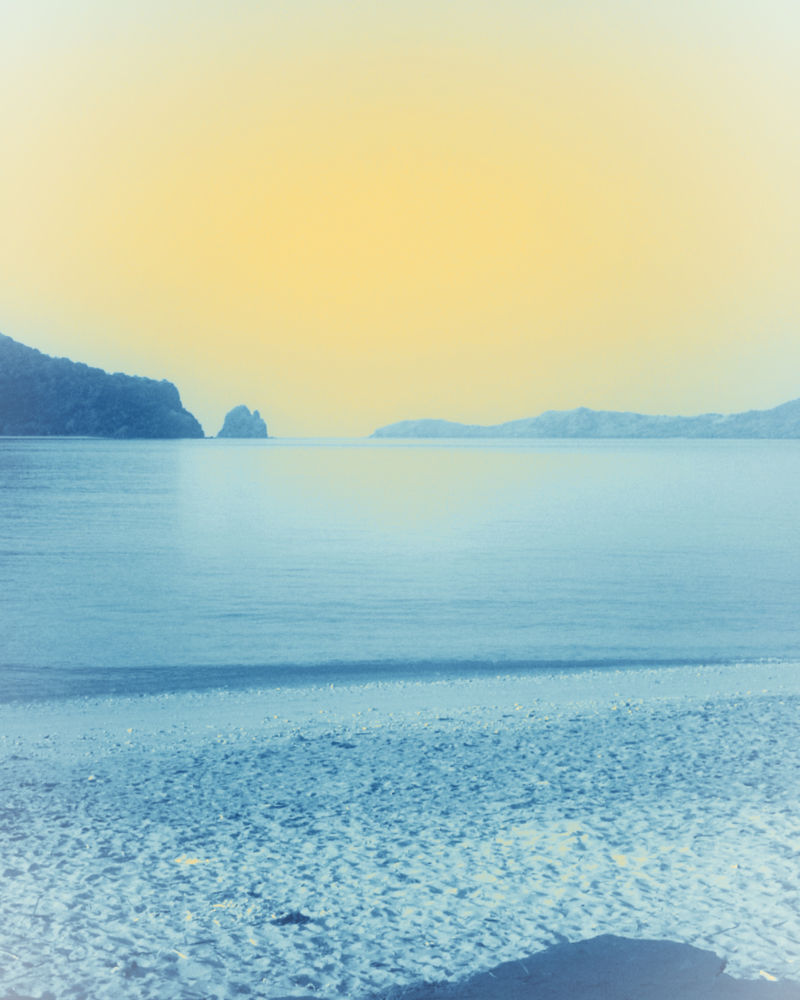

MoheliGoTRAVERSÉES MARITIMES DES COMORES
ÎLOTS DE NIOUMACHOUA
UNION DES COMORES
UNION DES COMORES
LE MATIN, L'ÎLE EST DÉJÀ LÀ
MOHÉLI
Ouroveni ou Chindini au départ, Hoani ou Fomboni à l'arrivée. Votre place se réserve en deux minutes.
moheligo.com
BILLET QR · MVOLA · MÉTÉO MER 7 JOURS

Photo : Fatima771 (CC BY 3.0, Wikimedia Commons) — traitement MoheliGo